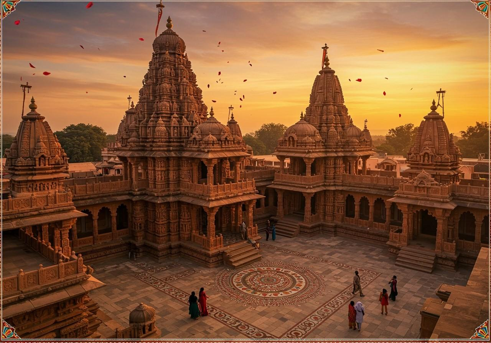

Ashoka the Great
The 3rd Mauryan Emperor who transformed from a formidable conqueror into ancient India's legendary patron of Dhamma, non-violence (*Ahimsa*), and moral governance following the Kalinga War (c. 268 – 232 BCE).

At a Glance: Key Historical Metadata
Early Reign & Accession
Before ascending the imperial throne at Pataliputra, Prince Ashoka served as viceroy (*Kumara*) in key strategic provinces under his father, Emperor Bindusara:
- Viceroyalty at Taxila: Successfully quelled regional insurrections in the northwestern frontier using diplomatic tact.
- Viceroyalty at Ujjain: Governed the prosperous western province of Avanti, overseeing major commercial highways connecting to the Arabian Sea.
Following Bindusara's death around 273 BCE, a period of succession struggle ensued before Ashoka's formal coronation at Pataliputra in c. 268 BCE. In his initial regnal years, he maintained the aggressive military expansionist policies of his predecessors.

📜 Contemporary Brahmi script inscriptions engraved on enduring rock boulders across South Asia.
The Kalinga War (~261 BCE) & Great Transformation
In his 8th regnal year (~261 BCE), Ashoka launched a massive campaign against Kalinga (modern Odisha), a wealthy maritime republic on the eastern coast that had resisted Mauryan hegemony.
Although victorious, the brutal scale of warfare—resulting in heavy loss of life, displacement of non-combatants, and widespread misery—profoundly shaken Ashoka's worldview.
As candidly recorded in his famous Major Rock Edict XIII, the Emperor expressed deep remorse and publicly renounced armed conquest (*Digvijaya*) in favor of moral conquest (*Dharmavijaya*), transforming from Chandashoka ("Fierce Ashoka") into Dharmashoka ("Pious Ashoka").

🐘 The rock-cut elephant at Dhauli (Odisha), marking the site of the Kalinga Edicts where Ashoka proclaimed peace.
Ashoka's Policy of Dhamma
Rather than enforcing a narrow religious dogma, Ashoka's Dhamma (Prakrit for *Dharma*) was an ethical framework for universal civic duty, social harmony, and moral governance.
Ahimsa (Non-Violence)
Prohibited animal sacrifices in royal kitchens, restricted hunting, and established animal protection laws across the empire.
Religious Tolerance
Enjoined respect for all sects—including Brahmins, Shramanas, Ajivikas, and Jains—advocating restraint in speech against other faiths.
Public Welfare State
Planted banyan trees, dug wells, built rest-houses along highways, and established herbal medical centers for humans and animals.
Dhammamahamatras
Created a specialized cadre of senior welfare officers tasked with promoting ethical conduct and auditing judicial fairness.

🏛️ Mauryan architectural legacy: Monolithic sandstone pillars and Great Stupas commissioned by Emperor Ashoka.
Interactive Inscriptions & Pillars Gallery
Click on any Ashokan Pillar or Rock Edict site below to inspect its translation and historical location:
Sarnath Lion Capital & Pillar Edict
Erected around 250 BCE at Sarnath, where Lord Buddha gave his first sermon. The polished sandstone pillar features four Asiatic lions standing back-to-back over a drum with 24-spoked wheels (*Ashoka Chakra*). It urges unity within the Sangha and forms modern India's State Emblem.
Interactive Map: Major Ashokan Inscription Sites
⚠️ Interactive map showing key surveyed Ashokan Rock and Pillar Edict locations across India, Pakistan, and Afghanistan.
Buddhism & Cultural Legacy
Ashoka played a pivotal role in transforming Buddhism from a regional North Indian monastic tradition into a major world religion:
- Third Buddhist Council: Convened the 3rd Buddhist Council at Pataliputra (~250 BCE) under Venerable Moggaliputta Tissa to resolve monastic schisms and compile the Kathavatthu.
- International Missions: Dispatched Dhamma envoys across Sri Lanka (led by his son Mahendra and daughter Sanghamitra), Burma, and Hellenistic rulers (Antiochus II of Syria, Ptolemy II of Egypt, Magas of Cyrene).
- National Symbols of India: The Sarnath Lion Capital was adopted as the official National Emblem of India in 1950, and the 24-spoked Ashoka Chakra adorns the center of the National Flag.

🌏 Spreading Dhamma and peaceful diplomacy across ancient Asia and the Mediterranean world.
Chronological Timeline of Reign
Verified Historical Facts
Test Your Knowledge on Ashoka 🎯
In which famous Major Rock Edict did Ashoka express deep remorse for the casualties of the Kalinga War and announce his pledge to Dhamma?
Academic Sources & References
- Hultzsch, E. (1925): Inscriptions of Asoka (Corpus Inscriptionum Indicarum, Vol. I), Government of India.
- Thapar, Romila (2012): Asoka and the Decline of the Mauryas, Oxford University Press.
- Mukherjee, B.N. (1984): Studies in the Aramaic Edicts of Asoka, Indian Museum Kolkata.
- Archaeological Survey of India (ASI): Reports on Sarnath, Dhauli, Girnar, and Vaishali Pillar excavations.
- Smith, Vincent A. (1909): Asoka: The Buddhist Emperor of India, Clarendon Press.